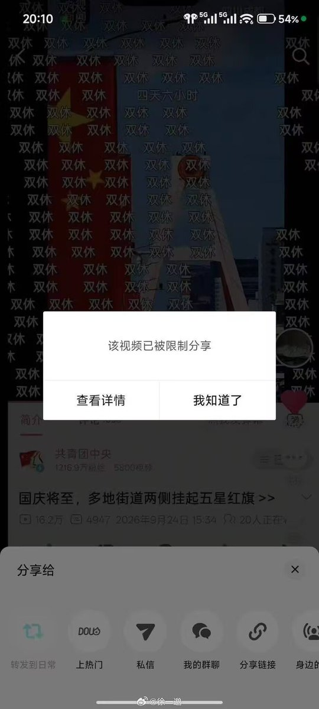

看了关于双休的讨论，有人说刷双休弹幕毫无意义，有本事就直接去劳动仲裁。但我的看法不一样：刷双休弹幕，本来就没人天真到以为发几条弹幕就能立刻把问题解决
发弹幕本质就是把打工人的集体诉求喊出来，让更多人看见，只有凝聚起群体的声音，才有争取改变的可能。不是我发一条，我的老板明天就改制度；而是无数人反复把 “双休、遵守劳动法” 这个诉求摆到公共视野里，让更多人意识到现在用工的不合理，形成社会共识。当整个社会舆论都普遍认同 “双休是合理权利”，才会倒逼监管、社会风气发生变化，这是面向整体环境的呼吁，不是解决某一个人的个案
再说劳动仲裁，就算今天我去、明天他去，也只能解决少数几个人的个案，而且仲裁并不会立刻出结果，往往要耗上好几个月。企业有专门的人员处理官司，打官司期间照常盈利赚钱；可普通人耗不起这么久，要糊口谋生，时间、精力成本都是实打实的。一个人仲裁，只能改变他自己这一份劳动合同，隔壁公司、整个行业的单休、无偿加班模式不会因为这一场仲裁就自动消失。一千个人各自单独去仲裁，也只是一千个孤立的个案，很难撼动行业普遍的用工惯性。落实劳动法，这是谁不想落实啊，现在的用工模式，企业有钱赚政府有税收有政绩，谁会愿意为普通打工人落实劳动法，客观现实不是光靠劳动者个人就能扭转
很多属于经济、结构性层面的问题，本就不是单靠个体就能解决。我们公开说出诉求，追求的其实是劳动者最基础的议价权。拿我身处的制造业举例：工时最长的是一线工人，他们几乎没有议价能力，“你不干，有的是人干”。十二小时两班倒、几乎全年无休是常态。很多一线人连上网发声的时间、精力甚至意识都没有，为了家庭和生存只能被动接受现状
生产线不能停，随之而来技术、工艺这类职能部门的项目周期就被压缩，工作节奏被迫紧张，上下游供应商整条产业链都会被连锁裹挟。其他行业我了解不多，但整体处境也好不到哪里去。舆论发声和个体仲裁不该拿来互相否定。仲裁是个体受损后的自救，但面对系统性的用工困境，只靠一个个劳动者单打独斗远远不够。弹幕也是合力处理方式，你不能因为人家发了弹幕就代表他没有通过法律去处理，况且即使人家没有按照法律处理，就想发发牢骚也有错了么？
发弹幕本质就是把打工人的集体诉求喊出来，让更多人看见，只有凝聚起群体的声音，才有争取改变的可能。不是我发一条，我的老板明天就改制度；而是无数人反复把 “双休、遵守劳动法” 这个诉求摆到公共视野里，让更多人意识到现在用工的不合理，形成社会共识。当整个社会舆论都普遍认同 “双休是合理权利”，才会倒逼监管、社会风气发生变化，这是面向整体环境的呼吁，不是解决某一个人的个案
再说劳动仲裁，就算今天我去、明天他去，也只能解决少数几个人的个案，而且仲裁并不会立刻出结果，往往要耗上好几个月。企业有专门的人员处理官司，打官司期间照常盈利赚钱；可普通人耗不起这么久，要糊口谋生，时间、精力成本都是实打实的。一个人仲裁，只能改变他自己这一份劳动合同，隔壁公司、整个行业的单休、无偿加班模式不会因为这一场仲裁就自动消失。一千个人各自单独去仲裁，也只是一千个孤立的个案，很难撼动行业普遍的用工惯性。落实劳动法，这是谁不想落实啊，现在的用工模式，企业有钱赚政府有税收有政绩，谁会愿意为普通打工人落实劳动法，客观现实不是光靠劳动者个人就能扭转
很多属于经济、结构性层面的问题，本就不是单靠个体就能解决。我们公开说出诉求，追求的其实是劳动者最基础的议价权。拿我身处的制造业举例：工时最长的是一线工人，他们几乎没有议价能力，“你不干，有的是人干”。十二小时两班倒、几乎全年无休是常态。很多一线人连上网发声的时间、精力甚至意识都没有，为了家庭和生存只能被动接受现状
生产线不能停，随之而来技术、工艺这类职能部门的项目周期就被压缩，工作节奏被迫紧张，上下游供应商整条产业链都会被连锁裹挟。其他行业我了解不多，但整体处境也好不到哪里去。舆论发声和个体仲裁不该拿来互相否定。仲裁是个体受损后的自救，但面对系统性的用工困境，只靠一个个劳动者单打独斗远远不够。弹幕也是合力处理方式，你不能因为人家发了弹幕就代表他没有通过法律去处理，况且即使人家没有按照法律处理，就想发发牢骚也有错了么？
